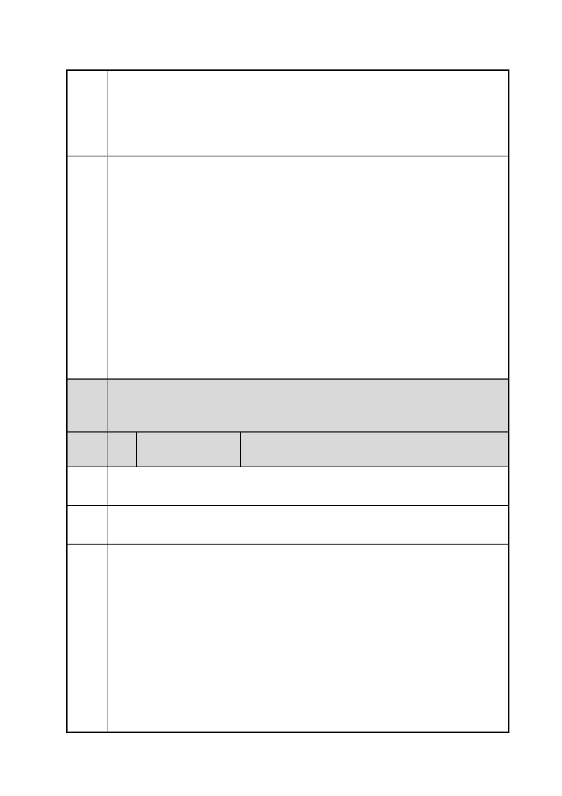

臺北市都市計畫委員會 公民或團體陳情意見綜理表
「變更臺北市信義區逸仙段二小段 33 地號等 21 筆土地（原臺北機廠）
案
名
工業區為創意文化專用區、特定專用區、道路及綠地用地主要計畫案」
及「擬定臺北市信義區逸仙段二小段 33 地號等 21 筆土地（原臺北機
廠）創意文化專用區、特定專用區、道路及綠地用地細部計畫暨劃定
都市更新地區計畫案」
（四）特定專用區（四）：澡堂(市定古蹟)座落土地範圍，作為文化
展場(鐵道或勞工文化展示與教育)使用，其允許使用項目與博物館用
地相同。使用強度為建蔽率 40%、容積率 40.82%。
三、有關本案規劃過程及程序之疑慮，同編號 12 市府回應說明一。
四、有關本計畫區否須辦理環境影響評估乙節，環保局依申請單位提
供之資料，於 103 年 2 月 24 日函復表示，依申請單位所提供之本計
畫區工廠登記類別為「運輸工具(鐵路客貨車輛)製造修配業」，依照
「開發行為應實施環境影響評估細目及範圍認定標準」第 31 條第 1
項第 24 款規定，辦理本次都市畫變更案尚不屬於應辦環評類別；但
後續開發行為是否需辦理環評，仍需視開發計畫內容依相關法令規定
另案判定。至特定專用區（三）未來之用，因其鄰近松山高中及南側
住宅社區，故以提供住宅使用為主之使用，允許使用項目比照第四種
住宅區規定辦理。
委員
會議 內容同編號 1。
決議
編
號
陳情
理由
14 陳情人
任○毅
如「臺灣鐵道暨國土規劃學會」新聞稿
建議 台鐵台北機廠全區保留。
辦法
【台灣鐵道暨國土規劃學會新聞稿】
本會台鐵台北機廠全區保存爭議聲明
位於台北市的台鐵台北機廠，因鐵路車輛維修機能遷移後之保存爭
議，本會有下列看法/聲明。
一、台鐵 1 仟 l 佰多億台幣的累積虧損，交通部台灣鐵路管理局擬
藉由與台北市政府進行地目變更的作法，得以銷售處分土地換得高額
收益，弭補帳面累積虧損。然鐵道事業經營赤字的問題，多為經營體
制與相關歷史因素造成，若為公共服務事業，應由主政部門會同立法
院充分溝通檢討，給予台鐵合理經營條件或政策性貼補方為正道。台
灣鐵路管理局所持有資產之處理應符合全民最大公共利益考量，逕行
出售與業者做商業開發或建置豪宅是否符合公共利益，各界迭有質
第 25 頁/共 154 頁